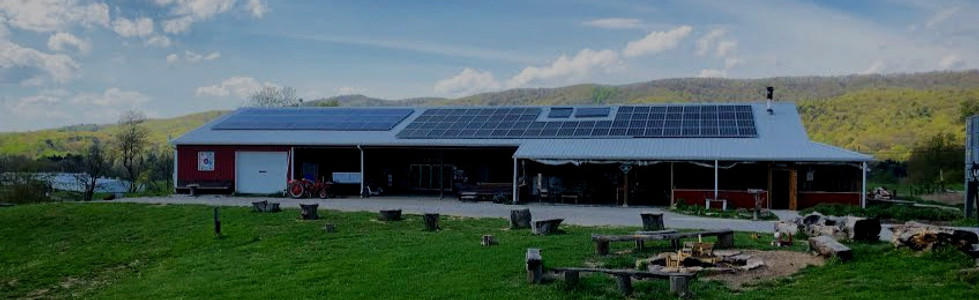

Our story
A farm brewery,
grown by the community.
Rising Silo is the creation of brewer Greg Zielske Jr., Jess Zielske, Pat Bixler, and the community members of Glade Road. We make fermented beverages from the best ingredients, overflowing with thought and authenticity in taste.
We believe in fresh food, true brews, and good people. Our fermentations come from the old farmhouse well that feeds the whole space, and the sun that powers it.
“Well inspired, solar fired.”That’s the whole place in four words.
